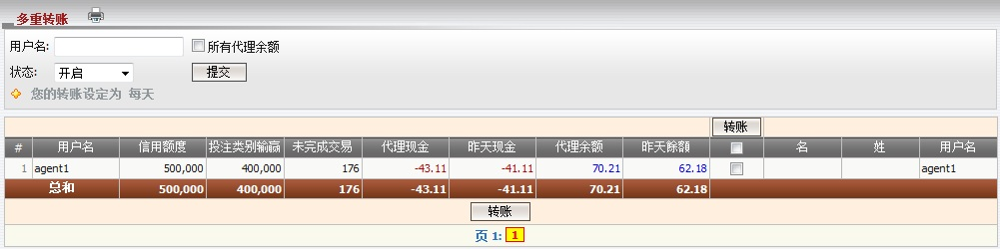

转账
定义:
转账是指必须从发送人转移至接收人的金钱数额以达到输/赢付款目的。我们有两种转账类型: 单一转账 及 多重转账。若您被允许在当日转账那您才能进行转账, 这就是所谓的转账条件包括: 每日转账及每周转账 (周一 - 周日)。
注:
- 将出现一则讯息通知您被允许作出转账的日期。
- 转账交易必须在中午12时至晚上11:59时完成 (GMT +8)。
- 转账只能进行于户口状态为: 开启, 关闭, 暂停及禁用。
- 昨天余额 > 0 --> 总代理将支付于代理。
- 昨天余额 < 0 --> 总代理将接收于代理。
- 子账户必须被授予转账权限才能进行转账。
- 要编辑代理的转账设定, 总代理必须被允许每日转账。

图 1.1
定义:
- 信用额度: 最初给予每个代理的信用额度。
- 已用额度: 每个代理最初给予所有会员的信用额度。
- 未完成交易: 代理根据他/她的占成, 在会员投注额的分担于进行中/等待中的注单。
- 代理现金: 代理输/赢总额。
- 昨天现金余额: 代理输/赢总额至昨日。
- 代理余额: 总代理将接收或支付予代理的总数额。
- 昨天餘額: 总代理将接收或支付予代理的总数额至昨天。
如何理解报告:
从上图中, agent1最初被给予500,000, 他/她的分担根据他/她的占成于进行中/等待中的注单为176, 目前他/她将向总代理收取62.18和代理总余额 (包括今日输/赢) 为70.21。
如何转账:
点击各代理的昨天余额数以进行转账或选取 "转账" 列, 并点击 "转账" 按钮对所有代理的昨天余额进行多重转账。